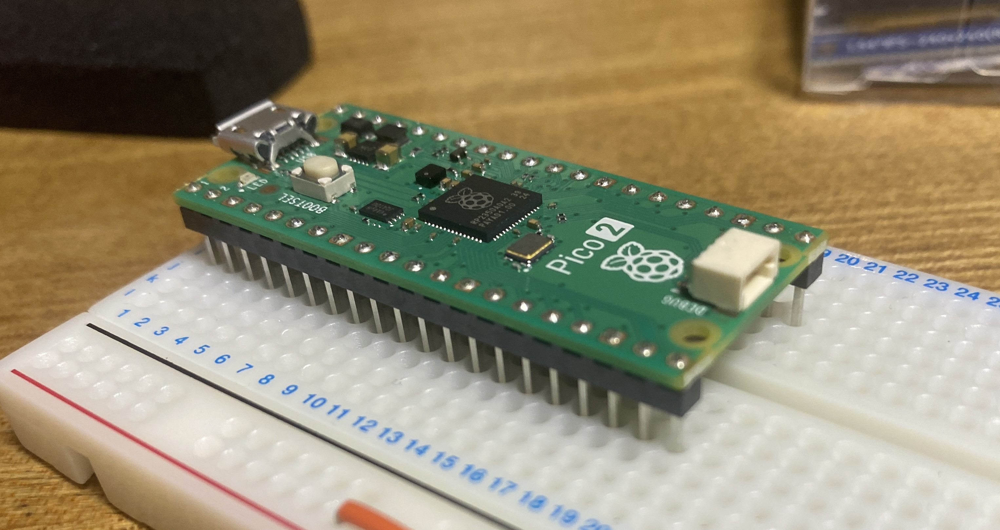
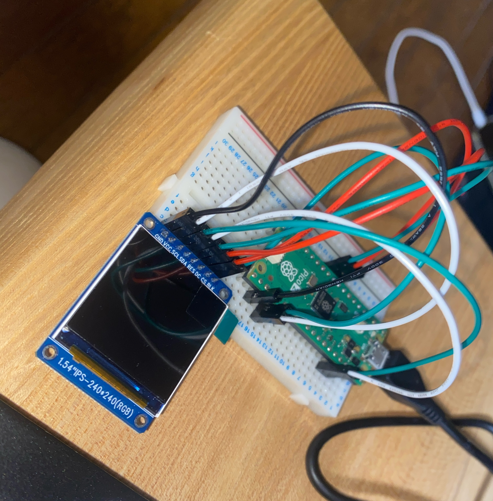
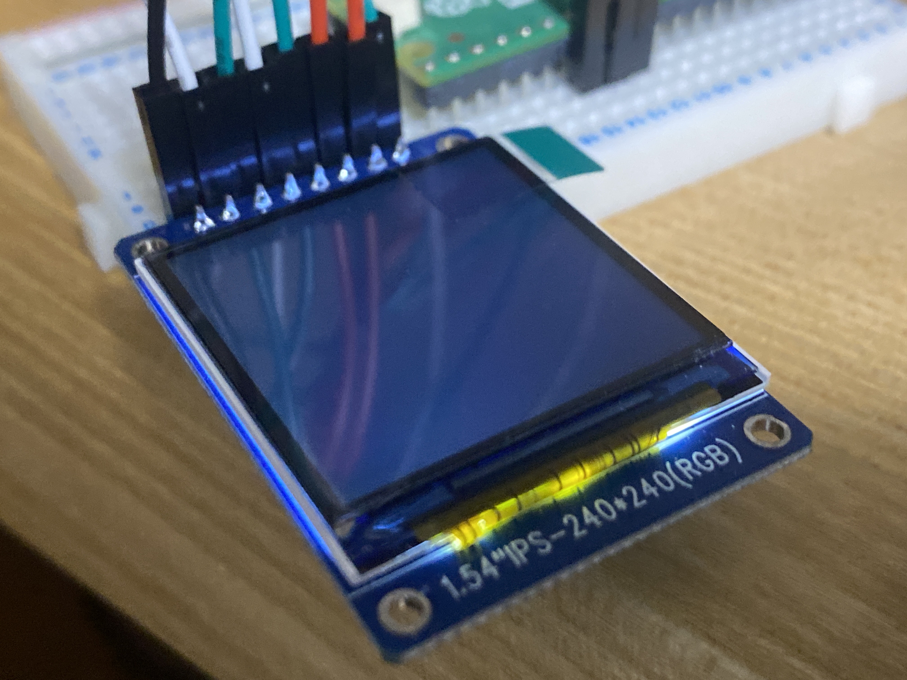
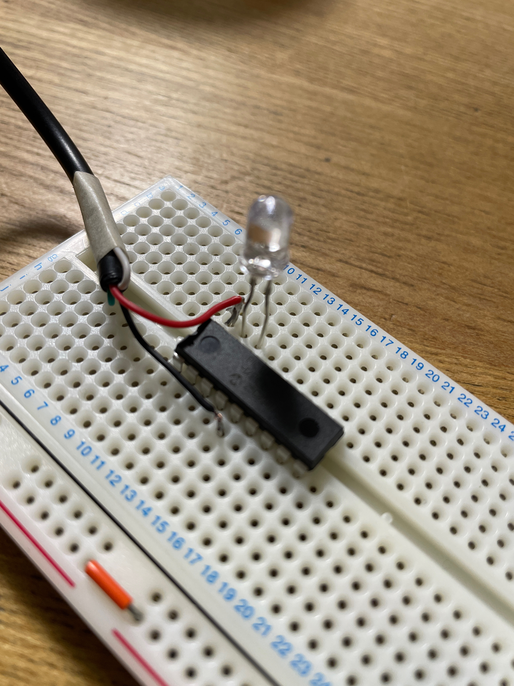
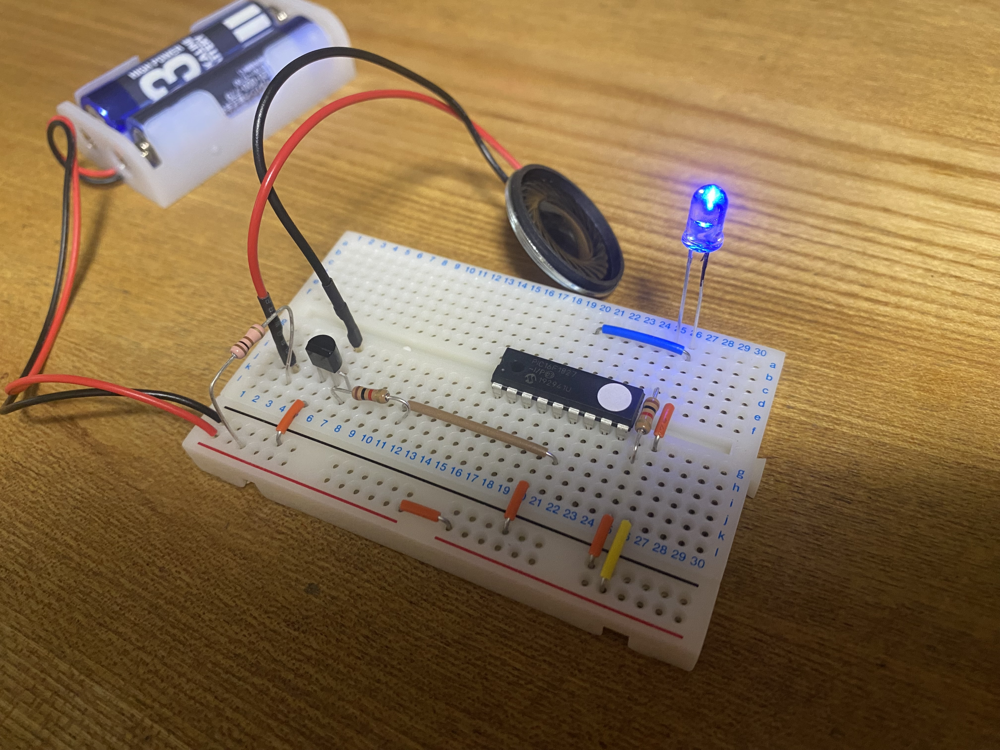

🔧 息子の電子工作記録
これから少しずつ作品を増やしていきます。
← トップページに戻る
Raspberry Pi 400②
(2026年9月1日）
待っていたGPIO 40ピンブレークアウトブレッドボードセットが到着。
配線を整えて、もう一度挑戦した。
AIに相談しながら配線やプログラムを確認し、試行錯誤。
そして、挑戦を始めてから約1時間ほどで、M154-240240-RGBへの表示に成功！
以前Raspberry Pi Pico 2でうまく表示できなかった液晶が、Raspberry Pi 400のGPIOから表示された。
AIにも相談しながら試行錯誤し、約1時間で表示することができた。


Raspberry Pi 400①
- Raspberry Pi OSをインストール
(2026年8月22日）
手持ちのマイクロSDカードにインストールして起動させてみたが動作が遅いので検討した。
SDカードが高騰しているので手持ちの2.5インチHDDを使うことにした。
最初に使ったマイクロSDよりは使える速度みたい。
- 日本語入力を設定
(2026年8月22日）
画面表示は日本語なのに日本語入力が出来ない事が分かりIME設定することになった。
sudo apt install fcitx5-mozc
im-config -n fcitx5
sudo reboot
これで日本語入力が出来るようになった。
以前うまくいかなかった液晶に再挑戦(Raspberry Pi 400)
（2026年8月29日）
Raspberry Pi Pico 2でうまく表示できなかった **M154-240240-RGB** に、今度はRaspberry Pi 400を使って再挑戦。
GPIOからジャンプワイヤを使って配線した。
しかし、必要なジャンプワイヤは8本。
手元には5本しかなかったため、完全な表示はできなかったものの、画面の半分だけ表示するところまで成功した。
以前はうまく表示できなかったため、
「もしかしたら今回は表示できるかもしれない」
と期待できる結果だった。


学校の自由研究② 小型スピーカー用アンプ
（2026年8月）
以前作った小型スピーカーを鳴らすため、秋月電子のアンプキット **AE-7368** を製作。
しかし、このアンプには9Vの電源が必要だった。
そこで、USBの5Vから9Vを作ることにした。
秋月電子の昇圧キット **AE-LMR62421** を使用し、USBの5Vから9Vへの昇圧に成功。

Raspberry Pi Pico 2
（2026年6月）
その後、Raspberry Pi Pico 2を使った電子工作にも挑戦。
PICとは違うマイコンを使うことで、できることの幅がさらに広がった。

Pico 2をブレッドボードに刺してみたところ。
### 小型液晶に挑戦
Raspberry Pi Pico 2を使って、小型液晶 **M154-240240-RGB** の表示に挑戦。
しかし、うまく表示することができず、一度ここで挫折。
この液晶は、後にRaspberry Pi 400を使ってもう一度挑戦することになる。

Pico 2にジャンプワイヤーで配線してみた。

出来たのはバックライトの点灯まで。
PICマイコンでLチカ
(2026年5月)
電子ピアノキットに使われていたPICマイコンについても調べてみた。
プログラムを読み出してみようとしたが、プロテクトがかかっているようで読み出すことができなかった。
そこで、秋月電子でPICマイコンを購入し、自分でプログラムを書き込んで使ってみることにした。
まずはLEDを点滅させる、いわゆる「Lチカ」に挑戦。
AIにも相談しながらプログラムを書き、マイコンからLEDを制御することができた。

あれ？抵抗ないんだけど・・・。
電子ピアノキット
（2026年5月）
電子工作を始めた頃、門田無線の閉店セールでサンハヤトの電子ピアノキットを見つけ、購入して製作しました。

このpicマイコンの足にジャンプワイヤーを取り付け、段ボールに貼ったアルミテープの下に反対側のジャンプワイヤーを挟みます。
アルミテープが鍵盤になります。完成写真は撮り損なってました。
← トップページに戻る